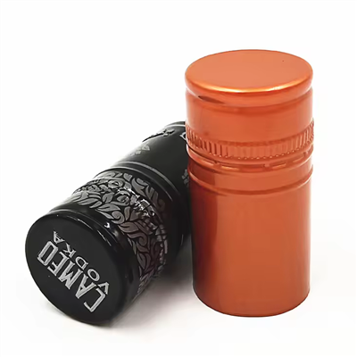

Hey there! I'm a supplier of QR Code Bottle Caps, and I've been thinking a lot about how these nifty little things perform in international markets. So, let's dive right in and explore this topic together.
The Rise of QR Code Bottle Caps
First off, let's talk about what QR code bottle caps are and why they're becoming so popular. QR codes, or Quick Response codes, are two - dimensional barcodes that can store a whole bunch of information. When you put them on bottle caps, it opens up a world of possibilities for brands and consumers alike.
For brands, QR code bottle caps are a great way to engage with their customers. They can use the codes to offer exclusive content, like behind - the - scenes videos, special promotions, or loyalty program rewards. It's a direct line of communication between the brand and the consumer, right there on the bottle cap.
On the consumer side, it adds an extra layer of fun and interactivity. Scanning a QR code on a bottle cap can be like opening a little treasure chest of surprises. You might find a discount code for your next purchase, a chance to enter a contest, or some interesting facts about the product.
Performance in Different International Markets
North America
In North America, the market for QR code bottle caps has been steadily growing. Consumers here are tech - savvy and always looking for new ways to interact with brands. Beverage companies have been quick to jump on the QR code bandwagon, especially in the craft beer and spirits industries.


Craft breweries, for example, use QR codes to tell the story of their beer. They can share information about the brewing process, the ingredients used, and the inspiration behind the recipe. This helps to build a stronger connection between the brand and the consumer, and it can also set them apart from the competition.
The spirits industry has also seen success with QR code bottle caps. Distilleries use the codes to provide tasting notes, cocktail recipes, and even virtual tours of their facilities. It's a great way to enhance the consumer experience and make the product more memorable.
Europe
Europe has a diverse market when it comes to QR code bottle caps. In countries like Germany and the UK, there's a high level of acceptance of new technologies, and consumers are more likely to scan QR codes on bottle caps.
In the wine industry, QR codes are becoming increasingly popular. Wineries can use the codes to provide detailed information about the wine, such as its origin, grape variety, and food pairings. Some even offer virtual wine tastings through the QR code, which is a great way to engage with consumers who can't visit the winery in person.
In the soft drink market, companies are using QR codes to promote healthy living and sustainability. For example, a soda brand might use the code to provide information about the sugar content in their product or to encourage consumers to recycle the bottle.
Asia
Asia is a huge and dynamic market for QR code bottle caps. In countries like China and Japan, mobile payment and QR code usage are extremely high. Consumers are very comfortable using their smartphones to scan codes, which makes QR code bottle caps a perfect fit.
In the tea and coffee industries, QR codes are used to offer personalized experiences. For example, a tea brand might use the code to recommend different brewing methods based on the consumer's taste preferences. In the energy drink market, QR codes are often used to promote fitness challenges and contests.
Factors Affecting Performance
Cultural Differences
Cultural differences play a big role in how QR code bottle caps perform in international markets. In some cultures, consumers are more privacy - conscious and may be hesitant to scan QR codes for fear of sharing their personal information. In other cultures, there may be a lack of awareness or understanding of what QR codes are and how to use them.
For example, in some parts of Africa, where smartphone penetration is lower, the adoption of QR code bottle caps may be slower. Brands need to take these cultural differences into account when planning their QR code campaigns.
Technological Infrastructure
The technological infrastructure in a country also affects the performance of QR code bottle caps. In areas with poor internet connectivity, it can be difficult for consumers to scan QR codes and access the information. Brands need to ensure that their QR code content is optimized for low - bandwidth connections or provide offline alternatives.
Regulatory Environment
The regulatory environment in different countries can also impact the use of QR code bottle caps. Some countries may have strict rules about the types of information that can be stored in a QR code or how it can be used for marketing purposes. Brands need to be aware of these regulations and ensure that their QR code campaigns comply with them.
Our Product Range
As a QR Code Bottle Cap supplier, we offer a wide range of products to meet the needs of different industries. We have 30*60mm Wine Bottle Cap, which are perfect for the wine industry. These caps are designed to be durable and can hold high - quality QR codes that are easy to scan.
For the soda industry, we have Soda Water Glass Bottle caps. These caps are made to withstand the pressure of carbonated beverages and can be customized with unique QR code designs.
We also offer Aluminum Caps For Reheating Juice. These caps are suitable for juice products that need to be reheated, and the QR codes on them can provide information about the nutritional value and storage instructions.
Conclusion and Call to Action
In conclusion, QR code bottle caps have a lot of potential in international markets, but their performance can vary depending on a number of factors. By understanding the cultural, technological, and regulatory differences in different countries, brands can create successful QR code campaigns that engage consumers and drive sales.
If you're a beverage company looking to enhance your product with QR code bottle caps, we'd love to hear from you. We have the expertise and the product range to help you create a unique and effective QR code solution for your brand. Contact us to start a discussion about your specific needs and how we can work together to make your product stand out in the international market.
References
- "QR Code Marketing: Strategies and Best Practices" by Marketing Insights Journal
- "The Impact of Cultural Differences on Technology Adoption" by International Business Review
- "Mobile Payment and QR Code Usage in Asia" by Asian Technology Trends Report